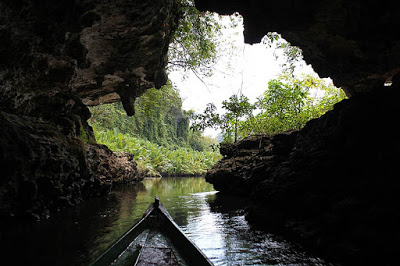

Di dalamnya terdapat sebuah lubang dengan kedalaman sekitar 30 meter. Meski minim stalaktit dan stalakmit, Kalo’k Dewata menyimpan pesona wisata yang cukup menarik untuk ditelusuri.
Gua ini adalah gua tertua yang diyakini sebagai tempat peristirahatan para dewa. Dimana di dalam liang gua terdapat tiga ruangan bersegi empat. Selain itu, juga ada keris yang terbuat dari batu, serta perabot kuno berupa guci benda kuno lainnya.
Menempuh berjalanan menanjak dan berkelok di lintas transSulawesi Palopo-Tanatoraja, dibutuhkan waktu sekitar 20 menit untuk mencapai lorong Gua Kallo Dewata yang menyimpang keunikan yang luar biasa itu. Bayangkan saja, lorong di gua ini dapat terhubung dengan beberapa gua lain yang ada di Kota Palopo, walaupun jaraknya terbilang sangat jauh. Seperti salah satu gua yang ada di Kecamatan Bua, Kabupaten Luwu.
Gua Kallo Dewata, selama ini dijadikan tempat bersarang kelelawar. Potensi ini dimanfaatkan masyarakat setempat dengan mengumpulkan kotoran kelelawar untuk dijual sebagai pupuk tanaman.
 Berada di Desa Lebang, Gua Kallo Dewata dahulu merupakan benteng pertahanan para pejuang kemerdekaan Republik Indonesia. Dengan jarak 9 km dari pusat kota Palopo, kini Goa Kallo Dewata lebih dikenal sebagai salah satu objek wisata di Palopo.
Di dalam Gua ini, Toppers bisa menemukan berbagai perabot kuno yang terbuat dari batu. Hal menarik lainnya adalah lorong-lorong di gua ini sangat panjang dan terhubung dengan gua-gua lain yang berada di Palopo.